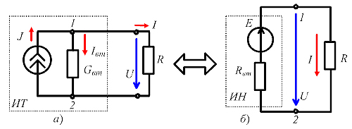

1.4. Взаимные преобразования источников напряжения и тока
В зависимости от метода расчета электрической цепи источники энергии на схеме замещения представляют или в виде источников напряжения ИН, или в виде источников тока ИТ, причем в ходе расчета возникает необходимость эквивалентной замены источника тока источником напряжения и обратно.  Рис. 1.14 Пусть ИТ имеет параметры J и Gвт, ток в приемнике равен I (рис. 1.14, а). Преобразуем его в ИН с параметрами E и Rвт (рис. 1.14, б). Однако при этом ток I в приемнике и напряжение U на его зажимах должны остаться неизменными. Для этой цели уравнение (1.22) внешней характеристики ИТ I = J - GвтU преобразуем в уравнение внешней характеристики ИН, поделив все его члены на проводимость Gвт:
I/Gвт = J/Gвт - U. Откуда
Обратное преобразование ИН в ИТ осуществляют, пользуясь соотношениями:
|
|||||||